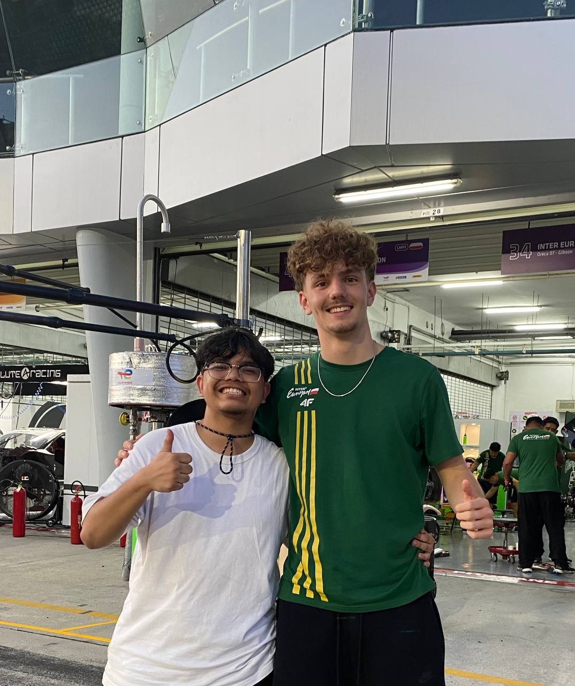
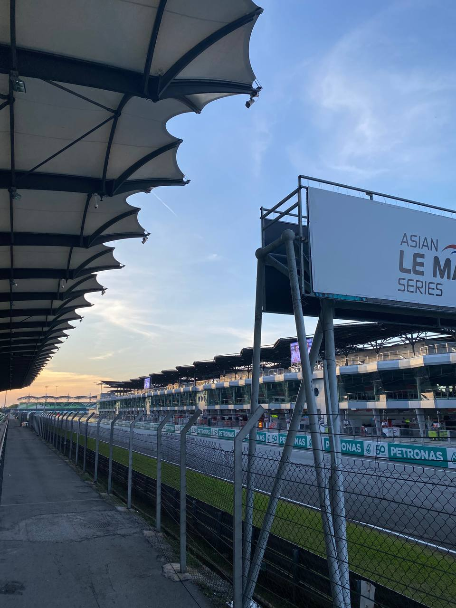
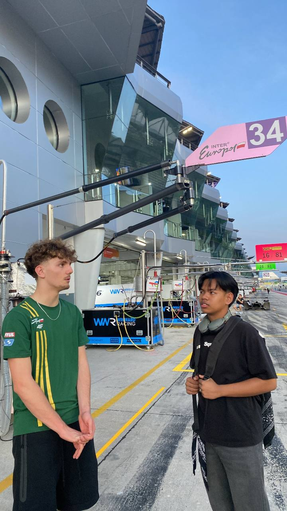
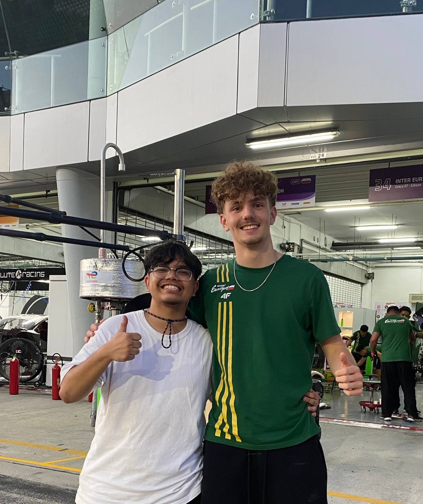
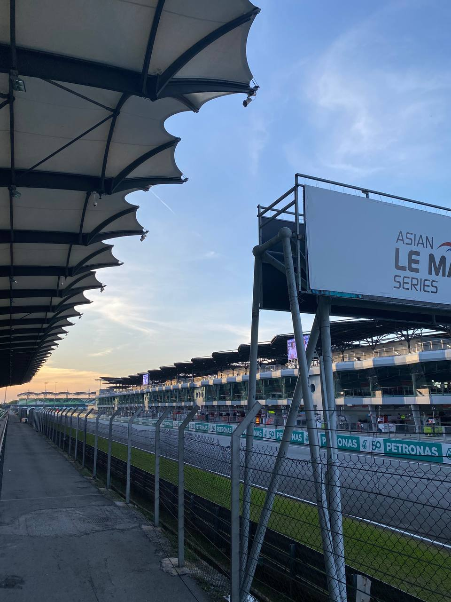
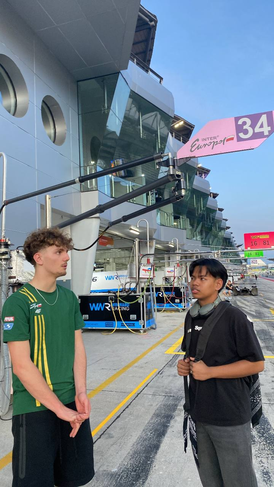

Asian Le Mans Asian Le Mans Series is a sports car endurance racing championship held across Asia, featuring prototypes and GT cars.Races typically last 4 hours and attract international teams, offering a mix of speed, strategy, and endurance in iconic Asian circuits.
 




